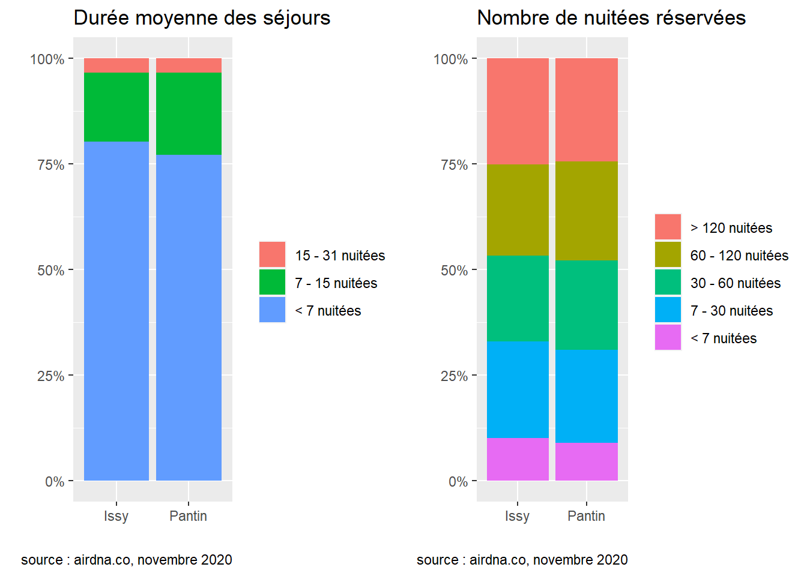
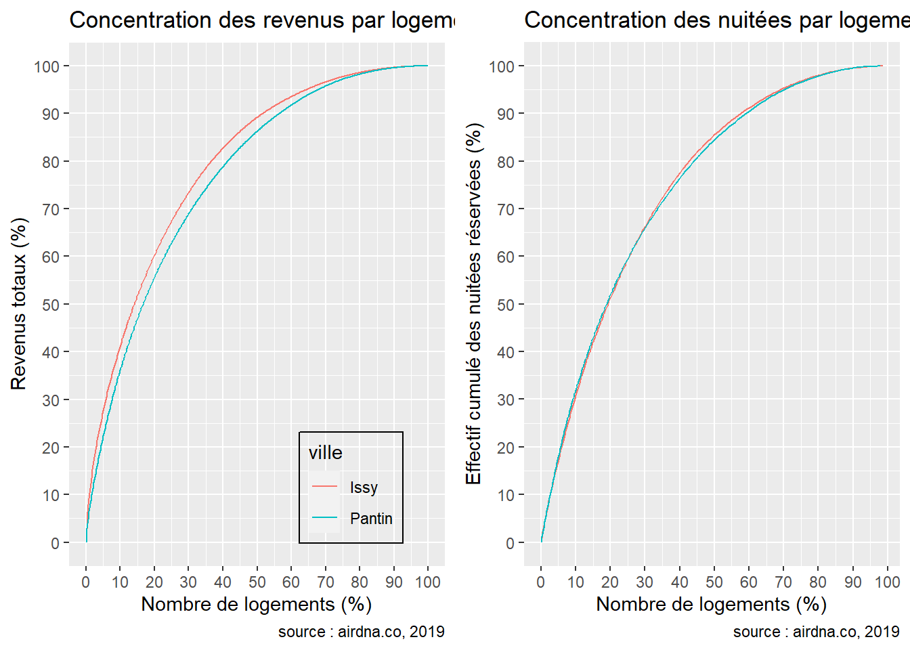
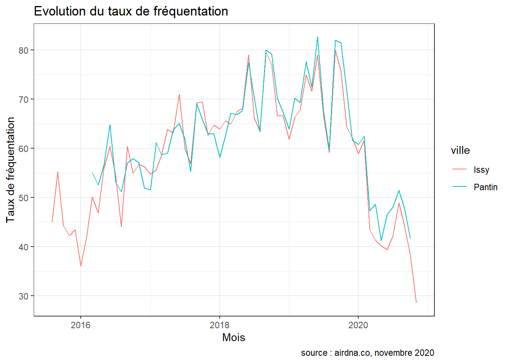
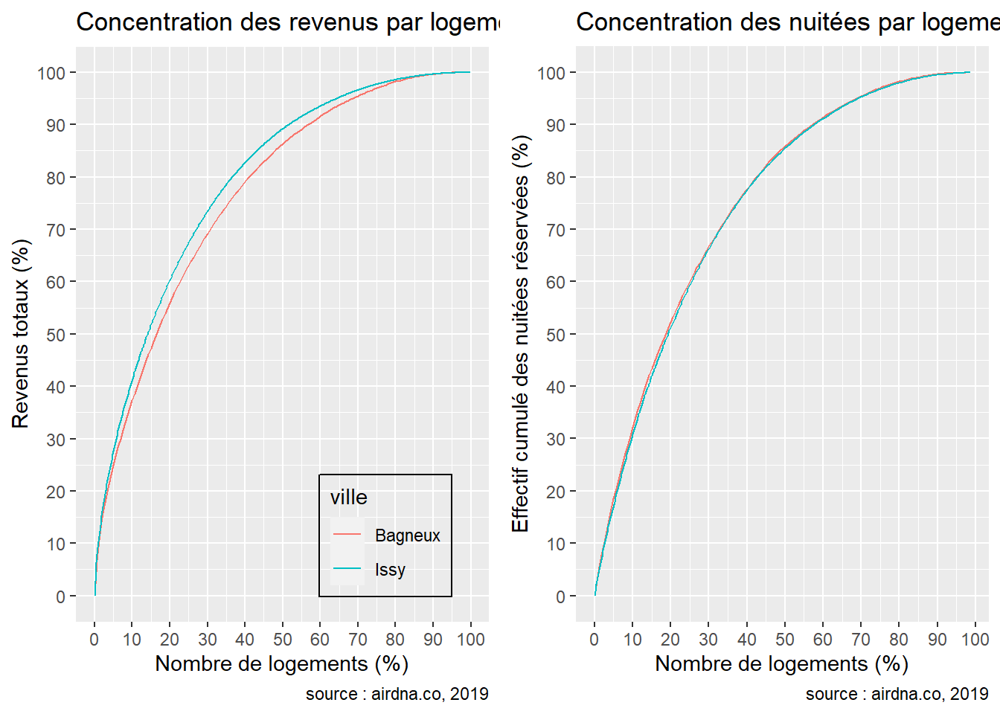
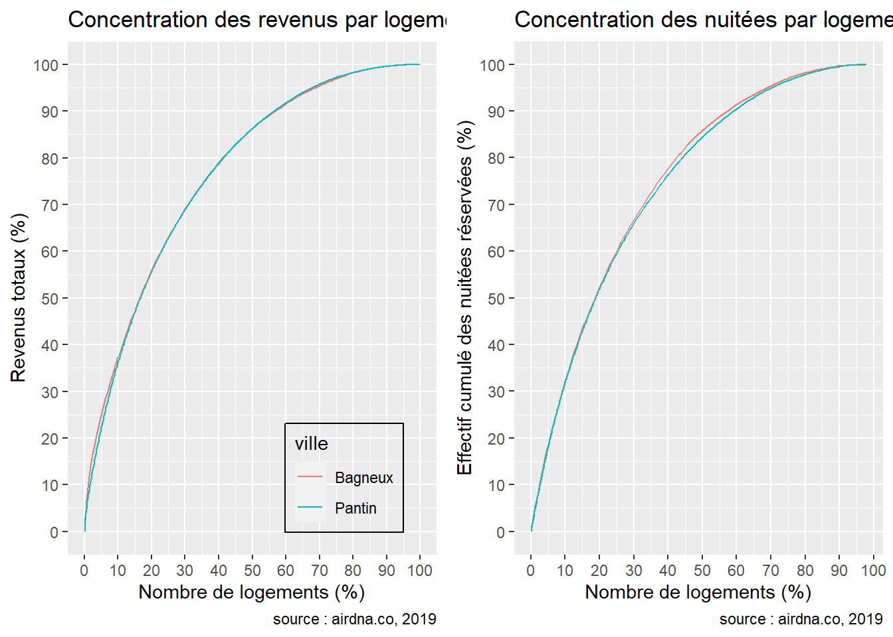
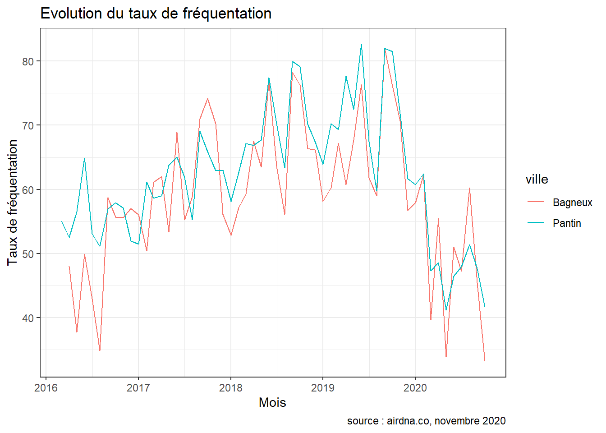

Comparaison inter-communes
Cette page propose une comparaison de communes prises deux à deux. Cette comparaison porte sur Issy-les-Moulineaux, Pantin et Bagneux.
1 Pantin - Issy
Ce document a pour objectif de comparer les performances et l’activité des logements Airbnb entre deux communes données, ici Pantin et Issy. Ces deux communes concentrent respectivement 1238 et 1153 logements Airbnb en 2019, pour 609 et 848 chambres d’hôtel. Les deux communes comptent donc plus de logements Airbnb que de chambres d’hôtel. Les logements Airbnb représentent respectivement 4.7 et 3.2% de la totalité des logements des communes de Pantin et Issy.
|
Tous les logements
|
Logements entiers
|
Chambres privées
|
||||
|---|---|---|---|---|---|---|
| Indicateur ( 2019 ) | Pantin | Issy | Pantin | Issy | Pantin | Issy |
| Nombre total de logements | 1238 | 1153 | 918 | 929 | 288 | 204 |
| Nombre de logements actifsa | 898 | 779 | 676 | 622 | 204 | 144 |
| Nombre de logements réservésb | 650 | 575 | 493 | 468 | 147 | 98 |
| a Un logement est considéré comme actif s’il a été proposé au moins une nuitée sur l’année | ||||||
| b Un logement est considéré comme réservé s’il a enregistré au moins une réservation au cours de l’année | ||||||
Le tableau suivant prend comme stock de référence les logements réservés. Le taux d’activité (nombre de logements réservés par rapport au nombre de logements actifs) est plus élevé dans la commune de Issy (73.81%) contre 72.38% dans la commune de Pantin. On observe une différence sensible entre le prix moyen pratiqué entre les communes : il est de 35$ à Issy contre 25$ à Pantin.
|
Tous les logements
|
Logements entiers
|
Chambres privées
|
||||
|---|---|---|---|---|---|---|
| Indicateur ( 2019 ) | Pantin | Issy | Pantin | Issy | Pantin | Issy |
| Taux d’activité (%) | 72 | 74 | 73 | 75 | 72 | 68 |
| Prix par personne moyen | 25 | 35 | 25 | 34 | 25 | 37 |
| Taux de fréquentation moyen (%) | 57 | 55 | 61 | 58 | 50 | 44 |
| Nombre moyen de nuitées disponibles | 146 | 146 | 133 | 143 | 182 | 164 |
| Nombre moyen de nuitées réservées | 83 | 80 | 81 | 83 | 91 | 73 |
| Part de logements loués fréquemment (>= 120 nuitées) | 24 | 25 | 24 | 26 | 27 | 26 |
| Part de logements loués occasionnellement (<= 7 nuitées) | 9 | 10 | 9 | 9 | 9 | 15 |
| Part des séjours de moins de 7 jours | 75 | 79 | 74 | 79 | 78 | 84 |
| Part des séjours de 15 jours ou plus | 4 | 4 | 5 | 3 | 1 | 3 |
| Part de logements détenus par des multiloueurs | 30 | 27 | 24 | 21 | 47 | 52 |
| Revenu médian engendré par logement ($) | 3714 | 4393 | 4050 | 5474 | 2867 | 2502 |
La durée moyenne des séjours ainsi que le nombre total de nuitées réservées représentent des indicateurs intéressants de l’activité d’Airbnb dans une ville : on dénombre respectivement 75 et 79% de séjours courts, c’est-à-dire inférieurs à une semaine, et environ un quart des logements ont engrangé plus de 120 nuitées réservées dans les deux communes. Les multiloueurs sont plus enclins à louer des chambres privées dans les deux communes : respectivement 47 et 52% d’entre elles sont louées par des multiloueurs. Enfin, la différence entre les prix pratiqués se répercute dans les revenus : les logements Airbnb de la commune de Issy ont engrangé un revenu médian de 4393$ en 2019, contre 3714$ à Pantin, soit des revenus supérieurs de l’ordre de 18% à Issy.

Lorsque l’on s’intéresse à la distribution des revenus ainsi que des nuitées réservées, on observe une poignée de logements qui concentrent la majeure partie de l’activité dans les deux communes. En effet, dans la commune de Issy, 20% des logements concentrent 60.28% des revenus totaux contre 55.64% à Pantin. On observe dans le second graphique que les nuitées sont plus concentrées dans la commune de Pantin : 20% des logements y concentrent 51.9% des nuitées totales contre 51.52% à Issy.

| Rang | Revenus en 2019 ($) | Nombre de logements | Revenus en 2019 ($) | Nombre de logements |
|---|---|---|---|---|
| 1 | 176584 | 11 | 284987 | 5 |
| 2 | 67829 | 5 | 95129 | 3 |
| 3 | 53118 | 1 | 88103 | 1 |
| 4 | 37056 | 1 | 74772 | 1 |
| 5 | 35407 | 2 | 61765 | 1 |
| 6 | 32003 | 3 | 61402 | 2 |
| 7 | 29924 | 1 | 53729 | 2 |
| 8 | 29413 | 1 | 50812 | 1 |
| 9 | 29186 | 2 | 49462 | 1 |
| 10 | 29116 | 12 | 43389 | 1 |
Si la majeure partie des nuitées et des revenus sont concentrés parmi un faible nombre de logements, c’est aussi le cas pour les hôtes : certains dépassent les 100.000$ de revenus dans les 2 communes. Les plus grands rentiers ont engrangé respectivement près de 177000 et 285000$ à Pantin et Issy en 2019. Ces revenus très élevés sont dûes en partie à la détention de plusieurs logements. Dans la commune de Pantin, on trouve des multiloueurs propriétaires de 12 logements. À Issy, des propriétaires détiennent jusqu’à 5 logements. Parmi les 5 hôtes les plus fortunés, on retrouve 2 monoloueurs à Pantin, et 3 à Issy.
Lorsque l’on s’intéresse à l’évolution de l’activité du marché depuis que airdna analyse les données (2016 à Pantin et 2015 à Issy), on observe que le pic du nombre de nuitées réservées est atteint à Pantin en juillet 2019 avec 350 logements réservés. À Issy, le pic apparaît plus tôt en juillet 2018 avec 294 logements réservés au cours de ce mois.


Enfin, lorsque l’on se concentre sur la période Covid, on observe sans surprise une baisse drastique de l’activité d’Airbnb dans la commune. Cette baisse s’observe notamment au niveau du comportement des visiteurs : on enregistre des baisses de l’ordre de -28.3 % et -30.5 % du nombre de nuitées réservées dans les deux communes. Les hôtes cependant n’ont pas pour autant diminué la disponibilité de leurs logements dans nos deux communes : on dénombre 0 % de nuitées disponibles en plus en 2020 par rapport à 2019 à Pantin, et 4.5 % à Issy. Le revenu mensuel médian quant à lui a chuté de respectivement -34.9 % et -41.3 %.
| Indicateurs | Pantin | Issy | Pantin | Issy | Pantin | Issy |
|---|---|---|---|---|---|---|
| Nombre de nuitées disponibles par mois | 23.5 | 23.3 | 23.5 | 24.3 | 0 % | 4.5 % |
| Nombre de nuitées réservées par mois | 16.8 | 16.1 | 12.0 | 11.2 | -28.3 % | -30.5 % |
| Taux de fréquentation mensuel (%) | 71.4 | 69.0 | 51.1 | 45.9 | -28.3 % | -33.5 % |
| Revenu mensuel médian ($) | 977.0 | 1349.2 | 636.5 | 792.0 | -34.9 % | -41.3 % |
2 Bagneux - Issy
Ce document a pour objectif de comparer les performances et l’activité des logements Airbnb entre deux communes données, ici Bagneux et Issy. Ces deux communes concentrent respectivement 335 et 1153 logements Airbnb en 2019, pour 47 et 848 chambres d’hôtel. Les deux communes comptent donc plus de logements Airbnb que de chambres d’hôtel. Les logements Airbnb représentent respectivement 1.9 et 3.2% de la totalité des logements des communes de Bagneux et Issy.
|
Tous les logements
|
Logements entiers
|
Chambres privées
|
||||
|---|---|---|---|---|---|---|
| Indicateur ( 2019 ) | Bagneux | Issy | Bagneux | Issy | Bagneux | Issy |
| Nombre total de logements | 335 | 1153 | 207 | 929 | 120 | 204 |
| Nombre de logements actifsa | 232 | 779 | 140 | 622 | 89 | 144 |
| Nombre de logements réservésb | 160 | 575 | 100 | 468 | 58 | 98 |
| a Un logement est considéré comme actif s’il a été proposé au moins une nuitée sur l’année | ||||||
| b Un logement est considéré comme réservé s’il a enregistré au moins une réservation au cours de l’année | ||||||
Le tableau suivant prend comme stock de référence les logements réservés. Le taux d’activité (nombre de logements réservés par rapport au nombre de logements actifs) est plus élevé dans la commune de Issy (73.81%) contre 68.97% dans la commune de Bagneux. On observe une différence sensible entre le prix moyen pratiqué entre les communes : il est de 35$ à Issy contre 27$ à Bagneux.
|
Tous les logements
|
Logements entiers
|
Chambres privées
|
||||
|---|---|---|---|---|---|---|
| Indicateur ( 2019 ) | Bagneux | Issy | Bagneux | Issy | Bagneux | Issy |
| Taux d’activité (%) | 69 | 74 | 71 | 75 | 65 | 68 |
| Prix par personne moyen | 27 | 35 | 27 | 34 | 28 | 37 |
| Taux de fréquentation moyen (%) | 49 | 55 | 49 | 58 | 48 | 44 |
| Nombre moyen de nuitées disponibles | 163 | 146 | 145 | 143 | 198 | 164 |
| Nombre moyen de nuitées réservées | 80 | 80 | 72 | 83 | 96 | 73 |
| Part de logements loués fréquemment (>= 120 nuitées) | 24 | 25 | 18 | 26 | 34 | 26 |
| Part de logements loués occasionnellement (<= 7 nuitées) | 11 | 10 | 11 | 9 | 7 | 15 |
| Part des séjours de moins de 7 jours | 81 | 79 | 78 | 79 | 86 | 84 |
| Part des séjours de 15 jours ou plus | 1 | 4 | 2 | 3 | 0 | 3 |
| Part de logements détenus par des multiloueurs | 36 | 27 | 24 | 21 | 57 | 52 |
| Revenu médian engendré par logement ($) | 3404 | 4393 | 3538 | 5474 | 3184 | 2502 |
La durée moyenne des séjours ainsi que le nombre total de nuitées réservées représentent des indicateurs intéressants de l’activité d’Airbnb dans une ville : on dénombre respectivement 81 et 79% de séjours courts, c’est-à-dire inférieurs à une semaine, et environ un quart des logements ont engrangé plus de 120 nuitées réservées dans les deux communes. Les multiloueurs sont plus enclins à louer des chambres privées dans les deux communes : respectivement 57 et 52% d’entre elles sont louées par des multiloueurs. Enfin, la différence entre les prix pratiqués se répercute dans les revenus : les logements Airbnb de la commune de Issy ont engrangé un revenu médian de 4393$ en 2019, contre 3404$ à Bagneux, soit des revenus supérieurs de l’ordre de 29% à Issy.
Lorsque l’on s’intéresse à la distribution des revenus ainsi que des nuitées réservées, on observe une poignée de logements qui concentrent la majeure partie de l’activité dans les deux communes. En effet, dans la commune de Issy, 20% des logements concentrent 60.28% des revenus totaux contre 55.98% à Bagneux. On observe dans le second graphique que les nuitées sont plus concentrées dans la commune de Bagneux : 20% des logements y concentrent 52.24% des nuitées totales contre 51.52% à Issy.

| Rang | Revenus en 2019 ($) | Nombre de logements | Revenus en 2019 ($) | Nombre de logements |
|---|---|---|---|---|
| 1 | 59478 | 1 | 284987 | 5 |
| 2 | 34347 | 1 | 95129 | 3 |
| 3 | 30636 | 3 | 88103 | 1 |
| 4 | 22632 | 1 | 74772 | 1 |
| 5 | 22467 | 1 | 61765 | 1 |
| 6 | 20396 | 2 | 61402 | 2 |
| 7 | 18439 | 1 | 53729 | 2 |
| 8 | 17808 | 3 | 50812 | 1 |
| 9 | 17352 | 1 | 49462 | 1 |
| 10 | 17144 | 4 | 43389 | 1 |
Si la majeure partie des nuitées et des revenus sont concentrés parmi un faible nombre de logements, c’est aussi le cas pour les hôtes : certains dépassent les 100.000$ de revenus dans la commune de Issy. Les plus grands rentiers ont engrangé respectivement près de 59000 et 285000$ à Bagneux et Issy en 2019. Ces revenus très élevés sont dûes en partie à la détention de plusieurs logements. Dans la commune de Bagneux, on trouve des multiloueurs propriétaires de 4 logements. À Issy, des propriétaires détiennent jusqu’à 5 logements. Parmi les 5 hôtes les plus fortunés, on retrouve 4 monoloueurs à Bagneux, et 3 à Issy.
Lorsque l’on s’intéresse à l’évolution de l’activité du marché depuis que airdna analyse les données (2016 à Bagneux et 2015 à Issy), on observe que le pic du nombre de nuitées réservées est atteint à Bagneux en juillet 2019 avec 82 logements réservés. À Issy, le pic apparaît plus tôt en juillet 2018 avec 294 logements réservés au cours de ce mois.


Enfin, lorsque l’on se concentre sur la période Covid, on observe sans surprise une baisse drastique de l’activité d’Airbnb dans la commune. Cette baisse s’observe notamment au niveau du comportement des visiteurs : on enregistre des baisses de l’ordre de -25.3 % et -30.5 % du nombre de nuitées réservées dans les deux communes. Les hôtes cependant n’ont pas pour autant diminué la disponibilité de leurs logements à Issy : on dénombre -0.1 % de nuitées disponibles en plus en 2020 par rapport à 2019. Le revenu mensuel médian quant à lui a chuté de respectivement -29.6 % et -41.3 %.
| Indicateurs | Bagneux | Issy | Bagneux | Issy | Bagneux | Issy |
|---|---|---|---|---|---|---|
| Nombre de nuitées disponibles par mois | 24.4 | 23.3 | 24.4 | 24.3 | -0.1 % | 4.5 % |
| Nombre de nuitées réservées par mois | 16.2 | 16.1 | 12.1 | 11.2 | -25.3 % | -30.5 % |
| Taux de fréquentation mensuel (%) | 66.4 | 69.0 | 49.6 | 45.9 | -25.3 % | -33.5 % |
| Revenu mensuel médian ($) | 955.5 | 1349.2 | 673.0 | 792.0 | -29.6 % | -41.3 % |
3 Bagneux - Pantin
Ce document a pour objectif de comparer les performances et l’activité des logements Airbnb entre deux communes données, ici Bagneux et Pantin. Ces deux communes concentrent respectivement 335 et 1238 logements Airbnb en 2019, pour 47 et 609 chambres d’hôtel. Les deux communes comptent donc plus de logements Airbnb que de chambres d’hôtel. Les logements Airbnb représentent respectivement 1.9 et 4.7% de la totalité des logements des communes de Bagneux et Pantin.
|
Tous les logements
|
Logements entiers
|
Chambres privées
|
||||
|---|---|---|---|---|---|---|
| Indicateur ( 2019 ) | Bagneux | Pantin | Bagneux | Pantin | Bagneux | Pantin |
| Nombre total de logements | 335 | 1238 | 207 | 918 | 120 | 288 |
| Nombre de logements actifsa | 232 | 898 | 140 | 676 | 89 | 204 |
| Nombre de logements réservésb | 160 | 650 | 100 | 493 | 58 | 147 |
| a Un logement est considéré comme actif s’il a été proposé au moins une nuitée sur l’année | ||||||
| b Un logement est considéré comme réservé s’il a enregistré au moins une réservation au cours de l’année | ||||||
Le tableau suivant prend comme stock de référence les logements réservés. Le taux d’activité (nombre de logements réservés par rapport au nombre de logements actifs) est plus élevé dans la commune de Pantin (72.38%) contre 68.97% dans la commune de Bagneux. On observe une très légère différence entre le prix moyen pratiqué entre les communes : il est de 27$ à Bagneux contre 25$ à Pantin.
|
Tous les logements
|
Logements entiers
|
Chambres privées
|
||||
|---|---|---|---|---|---|---|
| Indicateur ( 2019 ) | Bagneux | Pantin | Bagneux | Pantin | Bagneux | Pantin |
| Taux d’activité (%) | 69 | 72 | 71 | 73 | 65 | 72 |
| Prix par personne moyen | 27 | 25 | 27 | 25 | 28 | 25 |
| Taux de fréquentation moyen (%) | 49 | 57 | 49 | 61 | 48 | 50 |
| Nombre moyen de nuitées disponibles | 163 | 146 | 145 | 133 | 198 | 182 |
| Nombre moyen de nuitées réservées | 80 | 83 | 72 | 81 | 96 | 91 |
| Part de logements loués fréquemment (>= 120 nuitées) | 24 | 24 | 18 | 24 | 34 | 27 |
| Part de logements loués occasionnellement (<= 7 nuitées) | 11 | 9 | 11 | 9 | 7 | 9 |
| Part des séjours de moins de 7 jours | 81 | 75 | 78 | 74 | 86 | 78 |
| Part des séjours de 15 jours ou plus | 1 | 4 | 2 | 5 | 0 | 1 |
| Part de logements détenus par des multiloueurs | 36 | 30 | 24 | 24 | 57 | 47 |
| Revenu médian engendré par logement ($) | 3404 | 3714 | 3538 | 4050 | 3184 | 2867 |
La durée moyenne des séjours ainsi que le nombre total de nuitées réservées représentent des indicateurs intéressants de l’activité d’Airbnb dans une ville : on dénombre respectivement 81 et 75% de séjours courts, c’est-à-dire inférieurs à une semaine, et environ un quart des logements ont engrangé plus de 120 nuitées réservées dans les deux communes. Les multiloueurs sont plus enclins à louer des chambres privées dans les deux communes : respectivement 57 et 47% d’entre elles sont louées par des multiloueurs. Enfin, la ville qui pratique les prix les plus élevés n’est pas forcément celle où les hôtes engrangent le plus de revenus : les logements Airbnb de la commune de Pantin ont engrangé un revenu médian de 3714$ en 2019, contre 3404$ à Bagneux, soit des revenus supérieurs de l’ordre de 9% à Pantin.
Lorsque l’on s’intéresse à la distribution des revenus ainsi que des nuitées réservées, on observe une poignée de logements qui concentrent la majeure partie de l’activité dans les deux communes. En effet, dans la commune de Bagneux, 20% des logements concentrent 55.98% des revenus totaux contre 55.64% à Pantin. On observe dans le second graphique que les nuitées sont plus concentrées dans la commune de Bagneux : 20% des logements y concentrent 52.24% des nuitées totales contre 51.9% à Pantin.

| Rang | Revenus en 2019 ($) | Nombre de logements | Revenus en 2019 ($) | Nombre de logements |
|---|---|---|---|---|
| 1 | 59478 | 1 | 176584 | 11 |
| 2 | 34347 | 1 | 67829 | 5 |
| 3 | 30636 | 3 | 53118 | 1 |
| 4 | 22632 | 1 | 37056 | 1 |
| 5 | 22467 | 1 | 35407 | 2 |
| 6 | 20396 | 2 | 32003 | 3 |
| 7 | 18439 | 1 | 29924 | 1 |
| 8 | 17808 | 3 | 29413 | 1 |
| 9 | 17352 | 1 | 29186 | 2 |
| 10 | 17144 | 4 | 29116 | 12 |
Si la majeure partie des nuitées et des revenus sont concentrés parmi un faible nombre de logements, c’est aussi le cas pour les hôtes : certains dépassent les 100.000$ de revenus dans la commune de Pantin. Les plus grands rentiers ont engrangé respectivement près de 59000 et 177000$ à Bagneux et Pantin en 2019. Ces revenus très élevés sont dûes en partie à la détention de plusieurs logements. Dans la commune de Bagneux, on trouve des multiloueurs propriétaires de 4 logements. À Pantin, des propriétaires détiennent jusqu’à 12 logements. Parmi les 5 hôtes les plus fortunés, on retrouve 4 monoloueurs à Bagneux, et 2 à Pantin.
Lorsque l’on s’intéresse à l’évolution de l’activité du marché depuis que airdna analyse les données (2016 à Bagneux et 2016 à Pantin), on observe que le pic du nombre de nuitées réservées est atteint à Bagneux en juillet 2019 avec 82 logements réservés. À Pantin, le pic apparaît la même année en juillet 2019 avec 350 logements réservés au cours de ce mois.


Enfin, lorsque l’on se concentre sur la période Covid, on observe sans surprise une baisse drastique de l’activité d’Airbnb dans la commune. Cette baisse s’observe notamment au niveau du comportement des visiteurs : on enregistre des baisses de l’ordre de -25.3 % et -28.3 % du nombre de nuitées réservées dans les deux communes. Les hôtes cependant n’ont pas pour autant diminué la disponibilité de leurs logements à Pantin : on dénombre -0.1 % de nuitées disponibles en plus en 2020 par rapport à 2019. Le revenu mensuel médian quant à lui a chuté de respectivement -29.6 % et -34.9 %.
| Indicateurs | Bagneux | Pantin | Bagneux | Pantin | Bagneux | Pantin |
|---|---|---|---|---|---|---|
| Nombre de nuitées disponibles par mois | 24.4 | 23.5 | 24.4 | 23.5 | -0.1 % | 0 % |
| Nombre de nuitées réservées par mois | 16.2 | 16.8 | 12.1 | 12.0 | -25.3 % | -28.3 % |
| Taux de fréquentation mensuel (%) | 66.4 | 71.4 | 49.6 | 51.1 | -25.3 % | -28.3 % |
| Revenu mensuel médian ($) | 955.5 | 977.0 | 673.0 | 636.5 | -29.6 % | -34.9 % |